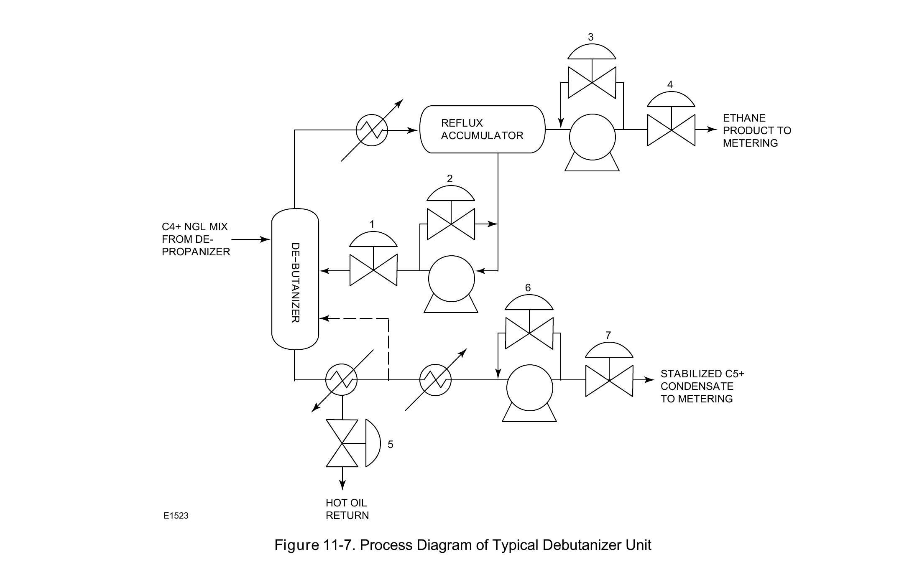

Distillation-Column Control

The debutanizer closes the train: reflux recycle (stations 1, 2) after reflux pumps (3, 4), a hot-oil reboiler (5), and product metering (6, 7) — the third and final instance of the same reflux/reboiler/product-draw pattern, confirming it holds across the whole train, not just the first two columns.
Fisher Control Valve Sourcebook — Oil & Gas (© 2013 Fisher), Chapter 11 "Fractionation," Figure 11-7 (drawing number E1523, printed p. 11-9) — "Figure 11-7. Process Diagram of Typical Debutanizer Unit." — used directly. Component Index: ogas-cmp-debutanizer-process-diagram.